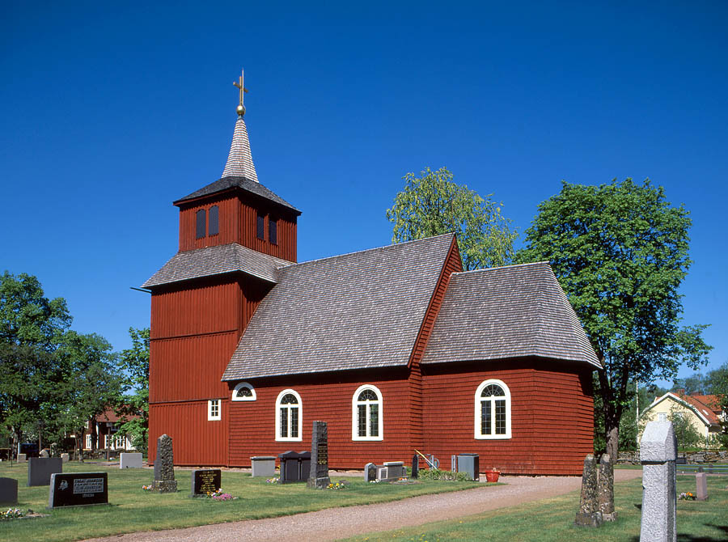
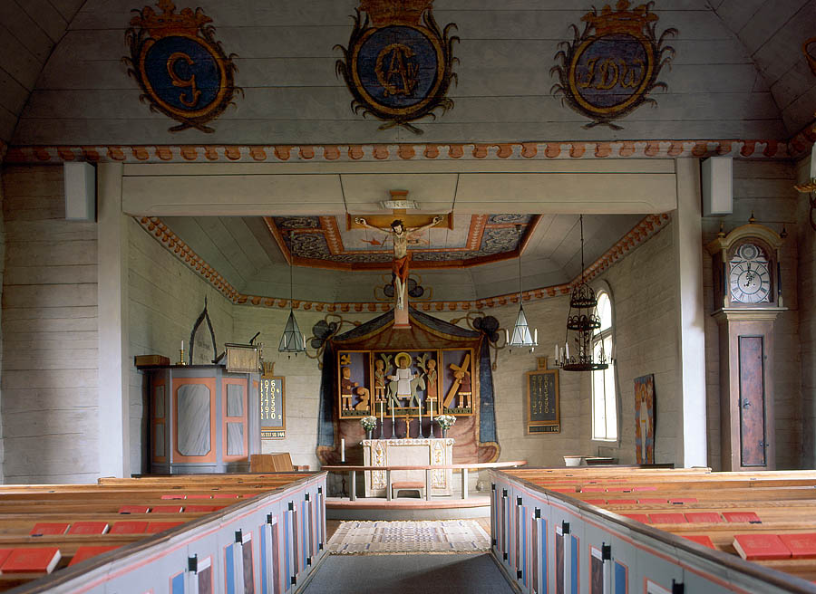

the church
The current Kävsjö kyrka is the third church building in the same spot. The first church was built in the 13th century using split logs. From this church, only the baptismal font and rood crucifix remain today. The current sacristy probably originates from Kävsjö's second church as evidenced by its slightly lower floor than in the rest of the church. The current church was built in stages between 1725 and 1775. Since then, it has been refurbished a couple of times during the 19th and 20th centuries. More information (in Swedish) about the history of the church can be found here.
On the 4th of July 1992, Ken and Camilla (Jakob’s parents) were married here.

